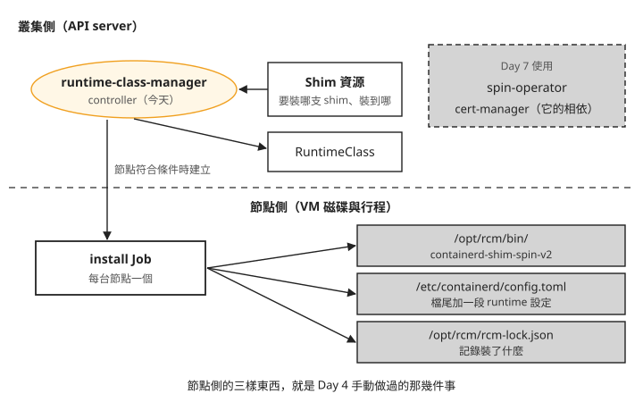
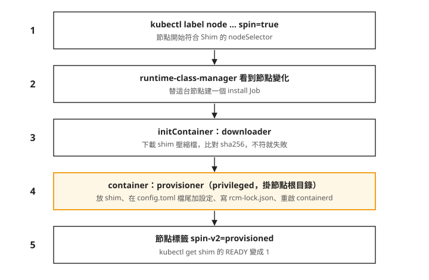
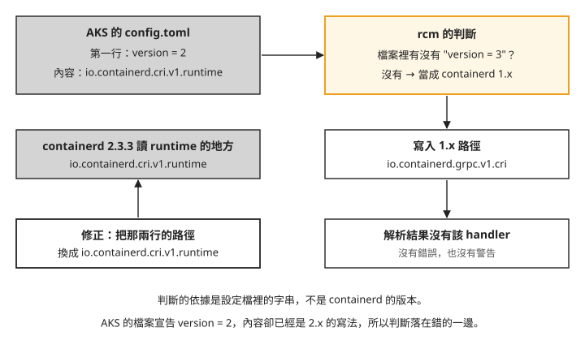

Day 6: SpinKube(上)——runtime-class-manager 佈建 shim 與節點側設定¶
Day 4 在一台節點上手動裝好 WasmEdge 的 shim：下載執行檔、在 config.toml 加一段 runtime 設定、重啟 containerd。一台節點這樣做還可以。叢集有十幾台節點、spot 節點隨時被回收、節點映像升級時整批換新，Day 5 也看過節點層的改動撐不過一次 VM 汰換，每台新節點都得重做一次。這件事適合交給 controller 自動做。
這一章用 SpinKube 的 runtime-class-manager 自動佈建 shim。裝完之後，kubectl get shim 顯示 READY、節點標著 provisioned、安裝用的 Job 是 Complete，送一顆 pod 進去，卻得到 no runtime for "spin-v2" is configured。我們會一步一步找出原因，修好它，最後讓一個 Spin 應用回應 HTTP 200。
讀完之後，一個自動化工具回報「節點已佈建」時，你能判斷 containerd 是否真的載入了那段設定；pod 起不來時，能分辨是 plugin 路徑寫錯、RuntimeClass 被同名物件佔住，還是映像缺少進入點。
從手動安裝到交給 controller¶
先回想 Day 4 在節點上做的三件事：把 shim 執行檔放上節點、在 config.toml 寫一段 runtime 設定、重啟 containerd 讓設定生效。再加上一個 API server 端的動作：建一個 RuntimeClass 指向那個 handler。
SpinKube 是一組讓 Spin 應用跑在 Kubernetes 上的專案。Spin 是一個用 WebAssembly 寫 HTTP 服務的框架，它的應用由 shim containerd-shim-spin 執行。SpinKube 把工作分成兩半：節點側由 runtime-class-manager（以下簡稱 rcm）負責，它是一個 controller，替符合條件的節點裝 shim、改設定、建 RuntimeClass；應用側由 spin-operator 負責，把 Spin 應用變成 Deployment，那是 Day 7 的內容。
rcm 從 Shim 資源得知要做什麼。Shim 是 rcm 定義的自訂資源，一份 Shim 描述一支 shim：從哪裡下載、雜湊值是多少、要裝到哪些節點、裝完要建什麼名字的 RuntimeClass。節點上的 rcm-lock.json 則記錄裝了哪支 shim、雜湊值與檔案路徑。
下圖把今天會碰到的元件按位置分開，上半部是 API server 裡的物件，下半部是節點上的檔案。圖中的 cert-manager 是管理 TLS 憑證的元件，Day 7 的 spin-operator 需要它，rcm 本身不需要：

照著圖看：rcm 讀 Shim 資源，決定要裝哪支 shim、裝到哪些節點；真正動手改節點的是它替每台節點建立的 install Job。節點側那三樣東西，前兩樣就是 Day 4 手動做過的事，第三樣是手動路線沒有的安裝紀錄。接下來的步驟會一個一個看到它們。
開始之前¶
本章指令使用 spin CLI v4.0.2、containerd-shim-spin v0.25.1 與 rcm v0.2.0；節點側的結果來自 containerd 2.3.3。安裝時請使用各步驟指定的版本。
節點上的指令透過 Day 1 的 node-shell DaemonSet 執行。先確認目前節點的 Pod 已就緒，重新取得名稱：
kubectl -n wasmlab rollout status ds/node-shell --timeout=5m
NODE_SHELL_POD=$(kubectl -n wasmlab get pod -l app=node-shell -o jsonpath='{.items[0].metadata.name}')
以下 kubectl、Helm 與 Spin 命令在本機執行；需要進節點時，命令會明列 exec 與 nsenter。
下載節點取樣腳本，存為 node-snapshot.sh。腳本會記錄 containerd 設定檔與解析結果、handler、shim 執行檔、RuntimeClass、設定目錄和節點標籤。先用 kubectl config get-contexts 找出本課 context，設定 CTX；KUBECONFIG 沿用 Day 2 的專用檔案。在本機執行：
開始安裝前，先將 day6-s0 與 Day 1 保存的基準比對。以下假設基準檔放在 sprint3-day1-manifests/：
$ diff sprint3-day1-manifests/baseline-containerd-config.toml day6-s0-containerd-config.toml
$ diff sprint3-day1-manifests/baseline-containerd-config-dump.toml day6-s0-containerd-config-dump.toml
$ diff sprint3-day1-manifests/baseline-node-runtimehandlers.json day6-s0-node-runtimehandlers.json
三次比對都沒有輸出且結束碼為 0，表示這三項與 Day 1 基準相同。本章後面的映像拉取結果以沒有 Day 5 的 WasmEdge handler 與映像拉取設定為前提。若沿用 Day 5 的原節點，請記錄仍在的差異；仍可操作 SpinKube，但不能把這個環境的映像拉取結果當成「未加設定」的對照。
每個階段換一個輸出前綴，例如 day6-s1，再逐份用 diff 比對。腳本假設只有一台測試節點；若有多台，要分別選定節點取樣，不能把第一筆 Node 與另一台 node-shell 的結果混用。
步驟 1:打包一個 Spin 應用¶
本機需要 Spin CLI 4.0.2 與 static-fileserver 範本；安裝方式見 Spin CLI 官方說明。請依文件的指定版本方式選 4.0.2，再用 spin --version 確認；直接安裝最新版不一定與本課相同。二進位檔手動安裝不會附範本，需依同頁的 Templates 段落另裝。先準備等一下要跑的應用。用 spin CLI 的 static-fileserver 範本建一個 app（spin new -t static-fileserver，依提示輸入專案名稱），它把 assets/ 目錄裡的檔案當成靜態網頁回應。切換到新建專案目錄，後面的 spin registry push 也在該目錄執行。在 assets/index.html 放一行 Sprint3 Day6 SpinKube probe。這個範本的 wasm 元件是官方預先編好的，不需要裝 Rust 之類的編譯工具。
推到 ttl.sh。ttl.sh 是不用帳號的公開 registry，tag 寫 :1h 表示映像保留一小時，適合做實驗；<tag> 換成你自己取的名字：
依 Spin v4 發佈文件與 OCI Distribution v1.1.0，推送成功後用 HTTP GET 從 ttl.sh 取得 manifest，<tag> 換成剛才推送使用的名稱，並在一小時內執行（依官方文件補上，本課沒有實跑）：
curl -fsSL \
-H 'Accept: application/vnd.oci.image.manifest.v1+json, application/vnd.docker.distribution.manifest.v2+json' \
'https://ttl.sh/v2/<tag>/manifests/1h'
把這個映像的 manifest 從 registry 拉回來看，layers 欄位是這樣：
"layers": [
{ "mediaType": "application/vnd.wasm.content.layer.v1+wasm", "size": 3781679 },
{ "mediaType": "application/vnd.fermyon.spin.application.v1+config", "size": 609 }
]
Day 4 看過的三種打包都只有一層，Spin 的有兩層。第一層是 wasm 本體。第二層 609 B 叫 locked app：Spin 應用的完整描述，包括用什麼觸發（這裡是 HTTP）、哪個路徑交給哪個元件、元件從哪裡來。28 B 的 index.html 也被 base64 編碼後直接放進 locked app，沒有另開一層。
image config 只有 209 B，裡面只有一個指向 locked app 的 label，沒有 Cmd，也沒有 Entrypoint。這一點在步驟 6 會讓 pod 起不來，先記著。
把它併進 Day 4 的打包對照表，現在有四欄：
| wasmCloud | runwasi tar | runwasi wasm-layer | Spin App | |
|---|---|---|---|---|
| layer mediaType | application/wasm |
…layer.v1.tar |
…wasm.component.layer.v0+wasm |
…wasm.content.layer.v1+wasm + …fermyon.spin.application.v1+config |
| 層數 | 1 | 1 | 1 | 2 |
| 進入點 | 列 WIT 介面 | Entrypoint |
Entrypoint + label |
沒有,config label 指向 locked app |
os 欄位 |
wasip2 |
wasip1 |
wasip1 |
wasip1(但 payload 其實是 component) |
| 誰讀得懂 | wasmCloud | WasmEdge | WasmEdge | containerd-shim-spin |
最右欄跟前三欄的 mediaType 都不同。wasm 的 OCI 打包沒有共通約定，mediaType 由各家自己定義，同一個 registry 裡的映像，不一定是同一種東西，要看哪個 shim 讀得懂。另外，用 Day 4 的方法看 wasm 檔的前 8 個位元組，是 00 61 73 6d 0d 00 01 00，代表 component；image config 的 os 欄位卻寫 wasip1。所以在 Spin 的打包裡，不能用 os 欄位判斷裡面是 component 還是 core module。
步驟 2:安裝 cert-manager 與 runtime-class-manager¶
先裝 cert-manager v1.21.1，供 Day 7 的 spin-operator 使用。rcm 0.2.0 的 chart 只有六個 template，沒有 webhook，也沒有任何 Certificate 資源。官方安裝指引把 cert-manager 排在第一步，是為了後面的 spin-operator，只裝 shim 可以略過，這裡先裝好給 Day 7 用。cert-manager 的 chart 在 jetstack 的 Helm repo，還沒加過的話，先 helm repo add jetstack https://charts.jetstack.io。
$ helm upgrade --install cert-manager jetstack/cert-manager -n cert-manager \
--create-namespace --version v1.21.1 --set crds.enabled=true --wait
$ helm upgrade --install runtime-class-manager \
oci://ghcr.io/spinframework/charts/runtime-class-manager --version 0.2.0 \
-n rcm --create-namespace --wait
rcm 的 chart 裝了一個 Deployment（controller 本身）、一個 Shim CRD（shims.runtime.spinkube.dev）、ServiceAccount 與 RBAC。
跟 Day 4 一樣，每一步前後都比對一次節點：config.toml、containerd config dump、runtimeHandlers、shim 執行檔清單、RuntimeClass 清單，今天再加上 containerd 設定目錄和節點標籤，共七項。裝完這兩個 chart，七項都跟裝之前一樣。controller 跑起來了，但它還沒碰任何節點。
步驟 3:告訴 rcm 要裝什麼、裝到哪些節點¶
containerd-shim-spin 的每個 release 都附了一份官方 Shim 資源。下載本課保存的 v0.25.1 官方 Shim YAML，存成 shim-spin-v2.yaml，不做任何修改，然後 kubectl apply -f shim-spin-v2.yaml。它的重點欄位是這幾個：
spec:
nodeSelector: {spin: "true"}
fetchStrategy:
platforms:
- {os: linux, arch: x86_64, location: "…/containerd-shim-spin-v2-linux-x86_64.tar.gz",
sha256: "1755fbeb…"}
runtimeClass: {name: wasmtime-spin-v2, handler: spin-v2}
由上往下看：nodeSelector 指定只有帶 spin=true 標籤的節點會被安裝；fetchStrategy.platforms 依 CPU 架構列出下載位置和 sha256，完整檔案裡另外還有一筆 aarch64；runtimeClass 指定要建的 RuntimeClass 叫 wasmtime-spin-v2，handler 是 spin-v2。
套用之後，看 rcm 有沒有動作：
$ kubectl get shim -o wide
NAME RUNTIMECLASS READY NODES
spin-v2 wasmtime-spin-v2 0 0
$ kubectl get jobs -A
No resources found
READY 0、NODES 0，也沒有任何 Job，節點的七項比對全都沒變。叢集裡沒有節點帶 spin=true，所以 rcm 什麼都不做。安裝範圍完全由 nodeSelector 決定，預設一台都沒有。Day 4 的手動路線，範圍是「你連進了哪台節點」，沒有地方記錄；這裡的範圍寫在一個 YAML 欄位裡，查得到。
替節點貼上標籤：
貼完之後，叢集裡出現一個 Job，幾秒內就 Complete。這是 rcm 替這台節點建立的 install Job，真正改節點的就是它。把它的結構攤開來：
initContainer: downloader → 下載 tarball,逐字比對 sha256,不符就失敗
container: provisioner → 掛 hostPath /,裝 shim、改 config.toml、經 D-Bus 重啟 containerd
兩者皆 privileged
把貼標籤之後的流程畫成圖，由上往下是時間順序：

照著圖上的編號看，第 3 步和第 4 步是兩個容器。downloader 先跑，下載 shim 壓縮檔並比對 sha256，雜湊對不上就失敗，Job 不會往下走；Day 4 有在本機核對雜湊，但節點另外下載的那份沒有再次核對；rcm 則在節點上的下載程序驗證。provisioner 以 privileged 模式掛載整台節點的根目錄，做的就是 Day 4 手動做的那幾件事，最後透過 systemd 重啟 containerd。
再比對一次節點，這次有變化：
config.toml +6 行(檔尾,# RCM runtime config for spin-v2 起)
/opt/rcm/bin/containerd-shim-spin-v2 83.9 MiB
/opt/rcm/rcm-lock.json 記錄 shim 名、sha256、路徑
節點標籤 +spin=true、+spin-v2=provisioned
shim 放在 /opt/rcm/bin/，不在 PATH 裡。rcm 在 config.toml 的 runtime_type 直接寫這支執行檔的絕對路徑，containerd 2.x 接受這種寫法，所以 shim 不需要放進 PATH。如果你沿用 Day 4 的方式，掃 /usr/bin 和 /usr/local/bin 確認 shim 在不在，會以為沒裝，見疑難排解：在 /usr/bin 找不到 shim。
安裝紀錄在 /opt/rcm/rcm-lock.json。之後要確認 shim 的名稱、雜湊值與安裝路徑，可以查這份檔案。
步驟 4:先處理同名的 RuntimeClass¶
從控制面看，安裝已經完成，每個指標都是成功：
$ kubectl get shim -o wide
NAME RUNTIMECLASS READY NODES
spin-v2 wasmtime-spin-v2 1 1
節點標籤: "spin-v2": "provisioned"
install Job: Complete,log 沒有任何 warning,最後一行是 restarting containerd
Shim 的 RUNTIMECLASS 欄寫著 wasmtime-spin-v2。可是叢集裡本來就有一顆同名的 RuntimeClass，是 Day 1 步驟 4 刻意建的對照組，handler 指向不存在的實作。SpinKube 的官方 Shim 資源用的也是這個名字，YAML 註解寫明這是 spin-operator 的預設值。看看 rcm 怎麼處理這個衝突：
{"level":"debug","shim":"spin-v2","message":"RuntimeClass found: wasmtime-spin-v2"}
$ kubectl get runtimeclass wasmtime-spin-v2 -o yaml
handler: wasmtime-spin-v2 ← 還是 Day 1 那個壞 handler
resourceVersion: "2402" ← 完全沒被改過
rcm 的 log 說它找到了這顆 RuntimeClass，然後就沒有下文。RuntimeClass 的 handler 還是 Day 1 的 wasmtime-spin-v2，resourceVersion 沒變，表示沒有被改過，rcm 也沒有報任何錯誤。rcm 的原始碼只用名字檢查 RuntimeClass 是否存在，存在就跳過建立，不比對裡面的欄位，見疑難排解：同名的 RuntimeClass 沒有被更新。
處理方式是刪掉 Day 1 那顆，讓 rcm 重建。Day 1 的對照組要示範的是「handler 不存在會怎樣」，跟名字無關，所以先用一個不會撞名的名字建一顆替代品，再刪原件：
cat > runtimeclass-day1-control-renamed.yaml <<'EOF'
apiVersion: node.k8s.io/v1
kind: RuntimeClass
metadata:
name: wasm-day1-missing-handler
handler: wasmtime-spin-v2
EOF
kubectl apply -f runtimeclass-day1-control-renamed.yaml
kubectl delete runtimeclass wasmtime-spin-v2
刪掉之後等一陣子，wasmtime-spin-v2 不會自己回來。rcm 只監看 Shim、Node、Job 三種資源的變化，RuntimeClass 被刪掉不會觸發它重新處理（reconcile）。對 Shim 做任何一次更新就能觸發，例如加一個 annotation：
rcm 隨即重建 RuntimeClass，見疑難排解：刪掉的 RuntimeClass 沒有自動重建。重建出來的這一顆長這樣：
handler: spin-v2
metadata:
ownerReferences:
- {kind: Shim, name: spin-v2, controller: true}
scheduling:
nodeSelector: {spin: "true"}
這顆有兩個欄位是 Day 4 手動建的 wasmedge 沒有的。scheduling.nodeSelector 在 Day 1 的疑難排解看過：指名這個 RuntimeClass 的 pod，只會被排到帶 spin=true 的節點；沒寫這一欄的 wasmedge，pod 可能被排到沒裝 shim 的節點再失敗。本課只有一台節點，多節點時的過濾行為沒有實際測過。ownerReferences 表示這顆 RuntimeClass 屬於 Shim spin-v2，刪掉 Shim 時，Kubernetes 會連帶刪掉它，Day 8 拆除時會用到這一點。
步驟 5:送一顆 pod 進去¶
現在 RuntimeClass 的 handler 是 spin-v2。寫一顆最簡單的 Pod 指名它，不經過 spin-operator，測試 spin-v2 handler 能否使用。映像換成步驟 1 推上去的那一個：
cat > pod-spinapp-probe.yaml <<'EOF'
apiVersion: v1
kind: Pod
metadata:
name: spinapp-probe
namespace: wasmlab
spec:
runtimeClassName: wasmtime-spin-v2
restartPolicy: Never
containers:
- name: app
image: ttl.sh/<tag>:1h
EOF
kubectl apply -f pod-spinapp-probe.yaml
kubectl -n wasmlab describe pod spinapp-probe 的事件：
這是 Day 1 看過的訊息：containerd 不認得這個 handler。可是 install Job 明明改過 config.toml，也重啟過 containerd。用 Day 4 的方法分三層查，分別看設定檔寫了什麼、設定檔經 containerd 解析後包含什麼、kubelet 回報的 handler 清單：
$ kubectl -n wasmlab exec "$NODE_SHELL_POD" -- nsenter -t 1 -m -- grep -c spin-v2 /etc/containerd/config.toml
$ kubectl -n wasmlab exec "$NODE_SHELL_POD" -- nsenter -t 1 -m -- sh -c 'containerd config dump | grep -c spin-v2'
$ kubectl get node -o jsonpath='{.items[0].status.runtimeHandlers}'
三層的結果：
config.toml 命中 spin-v2 的行數 = 4 檔案總行數 = 27 ← 宣告面:有
containerd config dump 命中 = 0 dump 總行數 = 308 ← 實際載入面:沒有
node.status.runtimeHandlers = ['', 'runc', 'untrusted'] ← 綁定粒度:沒有
config.toml 裡有 4 行提到 spin-v2，設定檔的解析結果裡一行都沒有。dump 本身有 308 行，跟沒裝任何東西時一樣，這指出 rcm 寫入的 handler 沒有出現在設定解析結果；重啟後的 Node 回報也沒有它。kubelet 回報的 handler 清單裡也沒有 spin-v2。
回頭看 rcm 寫進 config.toml 的那一段，第一行是這樣：
io.containerd.grpc.v1.cri 是 containerd 1.x、config version 2 使用的路徑，config version 3 的 runtime 路徑則是 io.containerd.cri.v1.runtime。containerd 官方文件 說明，2.x 仍支援 version 2，會自動轉換為 version 3。本章與 Day 4 遇到的是新舊 plugin 路徑混用的設定：在本章的 containerd 2.3.3 節點上，rcm 新增的舊路徑區塊沒有出現在解析結果中。rcm 為什麼會選到這個路徑？
rcm 決定路徑的程式在 internal/containerd/configure.go，v0.2.0 的原文：
func generateConfig(shimPath string, runtimeName string, runtimeOptions map[string]string, configData []byte) string {
// Config domain for containerd 1.0 (config version 2)
domain := "io.containerd.grpc.v1.cri"
if strings.Contains(string(configData), "version = 3") {
// Config domain for containerd 2.0 (config version 3)
domain = "io.containerd.cri.v1.runtime"
}
…
}
它在設定檔內文裡找 version = 3 這個字串：找到就用 2.x 路徑，找不到就用 1.x 路徑。Day 1 看過本章 AKS 節點所用的 config.toml：第一行宣告 version = 2，內容卻已經用 2.x 的 plugin 路徑。下圖呈現這份混用設定在 rcm v0.2.0 與 containerd 2.3.3 下的處理結果：

我們可以從圖上看到，rcm 的判斷依據是設定檔裡的一個字串。本章設定檔的版本號跟內容不一致，rcm 在這份混用格式的設定中寫出未被採用的新增路徑。Day 4 手動寫設定之前，先用 containerd -c <file> config dump 在副本上確認過路徑，所以沒有遇到這個問題；rcm 用字串比對取代了這一步，而且判斷錯了也不會報錯。
rcm 的官方文件 supported_distros.md 把 Azure Kubernetes 列為官方支援，但本章的 rcm v0.2.0、containerd 2.3.3 與這份混用設定仍出現上述問題。這個結果不能推論成所有 AKS 節點都會發生；安裝後仍要檢查設定解析結果與 handler 清單。
步驟 6:改一個字串，讓 pod 跑起來¶
修法只動 rcm 寫的那兩行：把 io.containerd.grpc.v1.cri 換成 io.containerd.cri.v1.runtime，再重啟 containerd。shim、Shim 資源都不用動，也不用重裝。先備份，再替換、重啟：
$ kubectl -n wasmlab exec "$NODE_SHELL_POD" -- nsenter -t 1 -m -- cp /etc/containerd/config.toml /etc/containerd/config.toml.rcm-1x-backup
$ kubectl -n wasmlab exec "$NODE_SHELL_POD" -- nsenter -t 1 -m -- sed -i 's|io\.containerd\.grpc\.v1\.cri"\.containerd\.runtimes\.spin-v2|io.containerd.cri.v1.runtime".containerd.runtimes.spin-v2|g' /etc/containerd/config.toml
$ kubectl -n wasmlab exec "$NODE_SHELL_POD" -- nsenter -t 1 -m -- systemctl restart containerd
這是手動修改節點上的檔案，節點汰換之後就會消失。如果新節點仍使用相同的混用設定，rcm v0.2.0 就會再選到舊路徑。正式環境要等上游修正，或另外想辦法讓它在每台新節點上自動套用；本課沒有測過把 config.toml 第一行改成 version = 3 的做法。另外，rcm 解除安裝時是用字串比對找出自己寫的那一段再刪掉，手改過之後字串對不上，Day 8 會實際走一次。
重啟之後，再用步驟 5 的方法查 dump 和 handler 清單（下面輸出的前兩行，是在 dump 裡數 spin-v2 出現幾次）。這次 spin-v2 出現了。刪掉步驟 5 那顆 pod，用同一份 YAML 再建一次，事件變成另一種錯誤：
映像拉下來了，sandbox 也建好了，卡在產生容器規格這一步。原因在步驟 1：Spin 映像的 image config 沒有 Cmd 也沒有 Entrypoint，容器執行時不知道要執行什麼。spin-operator 產生的 Deployment 會自己補上 command: ["/"]，直接手寫 Pod 就要自己補，見疑難排解：pod 停在 no command specified。
補上 command 另建一顆：
cat > pod-spinapp-probe-cmd.yaml <<'EOF'
apiVersion: v1
kind: Pod
metadata:
name: spinapp-probe-cmd
namespace: wasmlab
spec:
runtimeClassName: wasmtime-spin-v2
restartPolicy: Never
containers:
- name: app
image: ttl.sh/<tag>:1h
command: ["/"]
ports:
- containerPort: 80
EOF
kubectl apply -f pod-spinapp-probe-cmd.yaml
pod 進入 Running 之後，看它的 log，再從叢集裡另開一顆 curl pod 打它。<pod-ip> 用 kubectl -n wasmlab get pod spinapp-probe-cmd -o wide 查；curl 的指令是 kubectl -n wasmlab run day6-curl --image=curlimages/curl:8.11.1 -- -sS -i http://<pod-ip>/static/index.html，回應用 kubectl -n wasmlab logs day6-curl 看。下面把修正後的檢查、pod 的 log 與回應整理在一起：
下面保留的 kubectl logs spinapp-probe-cmd 少了 namespace；Pod manifest 指定的是 wasmlab，正確寫法是 kubectl -n wasmlab logs spinapp-probe-cmd。修正後的寫法本課沒有實跑。
--- 有效設定裡出現幾次 spin-v2(改前是 0)
3
$ kubectl get node -o jsonpath='{…runtimeHandlers}'
['', 'runc', 'spin-v2', 'untrusted']
$ kubectl logs spinapp-probe-cmd
Serving http://0.0.0.0:80
$ curl -sS -i http://<pod-ip>/static/index.html
HTTP/1.1 200 OK
Sprint3 Day6 SpinKube probe
修正之後，containerd 的有效設定裡出現 3 行 spin-v2，handler 清單多了 spin-v2，Spin 應用在 80 port 回應 HTTP 200，內容就是步驟 1 放進 index.html 的那一行。從本機打包、推到公開 registry、節點拉取映像、containerd-shim-spin 執行，到 HTTP 回應，整條路都走通了，而且沒有用到 spin-operator。
還有一件事跟 Day 4 不一樣。Day 4 的 runwasi 映像要在 containerd 加 use_local_image_pull = true 才拉得動，本次新節點的 Spin 映像沒有加任何映像拉取設定就拉成功了。可能跟打包形態有關（Spin 的 layer 不是 tar，沒有東西要解開），本課沒有做對照實驗確認。
rcm 自動化了 Day 4 的哪些事¶
把 Day 4 的手動步驟和 rcm 的做法並排比較：
| Day 4 手動 | rcm 自動化 | 誰做得比較好 |
|---|---|---|
curl 下載，自己挑版本與架構 |
fetchStrategy.platforms，依節點的 CPU 架構選 |
rcm：寫在 YAML 裡，一份涵蓋多種架構 |
| 本機核對 SHA256，節點再次下載未重驗 | downloader 在節點比對 sha256，不符就失敗 | rcm：核對實際安裝的下載檔 |
| 沒有任何安裝紀錄 | rcm-lock.json 記 shim 名、sha256、路徑 |
rcm |
| 手寫設定，先離線 parse 確認路徑才寫 | 在設定檔裡找 version = 3 字串決定路徑 |
Day 4：rcm v0.2.0 在本章混用設定中選錯路徑，而且不報錯 |
| 人決定什麼時候重啟 | provisioner 自己重啟 | rcm 比較方便，但重啟時機無法控制，也不會先把節點上的工作移走 |
RuntimeClass 沒帶 scheduling |
帶 scheduling.nodeSelector 與 ownerReferences |
rcm |
| 安裝範圍是「連進了哪台節點」 | nodeSelector，預設一台都沒有 |
rcm：範圍查得到 |
| 新節點加入時什麼都不會發生 | controller 監看 Node，應該會自動補裝 | 還沒驗證，Day 7 第一件事 |
取得檔案、校驗、放置、記錄、範圍、RuntimeClass 的生命週期，rcm 都比手動做得完整。它選錯的是「設定要寫到哪個 plugin 路徑」，而這正是 Day 4 先在副本上驗證過才寫進節點的那一步。
疑難排解¶
rcm 回報已佈建，pod 卻是 no runtime for "spin-v2" is configured¶
症狀：Shim READY 1/1、節點標著 spin-v2=provisioned、shim 在磁碟上、install Job Complete 且 log 沒有 warning，指名該 RuntimeClass 的 pod 卻卡在 FailedCreatePodSandBox。
原因：rcm v0.2.0 用設定檔裡有沒有 version = 3 來選 plugin 路徑。本章節點的 config.toml 宣告 version = 2、內容是 2.x 寫法，rcm 寫進 1.x 路徑後，containerd 2.3.3 的解析結果沒有那一段。這是本章混用設定的結果，version 2 本身仍受 containerd 2.x 支援。完整過程見步驟 5。
修法：把那兩行的 io.containerd.grpc.v1.cri 換成 io.containerd.cri.v1.runtime，重啟 containerd，指令在步驟 6。任何會自動改 containerd 設定的元件，裝完都用 containerd config dump 確認，不要只看 config.toml：前者是磁碟設定經解析、補上預設值的結果；它不是執行中服務的查詢，還要在重啟後檢查 runtimeHandlers 並跑實際 Pod。
同名的 RuntimeClass 沒有被更新¶
症狀：叢集裡已經有一顆同名的 RuntimeClass（handler 是別的值），套上 Shim 之後 kubectl get shim 照樣 READY，那顆 RuntimeClass 的欄位卻都沒變，resourceVersion 也沒變。
原因：rcm 只用名字檢查 RuntimeClass 存不存在，存在就跳過建立，不比對欄位。RuntimeClass 是叢集層級的資源，沒有 namespace 可以隔開，前一次安裝的殘留、其他 wasm 方案或手動實驗，都可能先用掉 wasmtime-spin-v2 這個名字。
修法：裝 rcm 之前先 kubectl get runtimeclass <name> -o yaml；有同名的就先刪掉，再讓 rcm 重建，做法見步驟 4。刪掉之後還要觸發一次重建，見下一項。
刪掉的 RuntimeClass 沒有自動重建¶
症狀：刪掉 RuntimeClass 之後，controller 的 log 沒有任何反應，kubectl get shim 的 RUNTIMECLASS 欄還印著那個已經不存在的名字。
原因：rcm 只監看 Shim、Node、Job 三種資源（controller 啟動時的 log 列出了這三個），RuntimeClass 被刪掉不會觸發它重新處理。
修法：對 Shim 做一次更新，例如 kubectl annotate shim <name> k=v --overwrite，RuntimeClass 隨即重建。
pod 停在 no command specified¶
症狀：handler 已經出現、映像也拉下來了，pod 卻是 failed to generate spec: no command specified。錯誤訊息裡沒有提到 wasm、Spin 或 shim。
原因：Spin 映像的 image config 沒有 Cmd 也沒有 Entrypoint，進入點資訊在 locked app 裡，容器執行時不認得那個 label。見步驟 1與步驟 6。
修法：Pod spec 補上 command: ["/"]。用 spin-operator 部署時它會自動補，只有自己手寫 Pod 或 Deployment 時會遇到。
在 /usr/bin 找不到 shim¶
症狀：install Job Complete、log 印 shim installed，但掃 /usr/bin、/usr/local/bin 確認 shim 在不在，會判斷成沒裝。
原因：rcm 把 shim 放在自己的目錄 /opt/rcm/bin/，並在 runtime_type 寫絕對路徑，shim 不需要在 PATH 裡。官方文件沒有寫這個位置。
修法：換一種安裝方式，就要重新確認 shim 放在哪裡。依可靠程度，依序查 containerd config dump 裡的 runtime_type、/opt/rcm/rcm-lock.json、install Job 的 log。不要用「掃某幾個目錄」判斷有沒有裝。
想一想¶
- 你在一座新的叢集上用 rcm 裝另一支 shim，節點的
config.toml第一行是version = 3。步驟 5 的問題還會出現嗎？裝完之後你會用哪個指令確認？ - 同事說：「
kubectl get shim是 READY，節點也標了provisioned，所以 shim 裝好了。」你會請他再看哪兩樣東西，才能確定 pod 跑得起來？ - 一顆 Spin pod 一直卡在
ContainerCreating，事件是no runtime for "spin-v2" is configured。叢集裡有好幾台節點，只有部分節點貼了spin=true。依照本章看到的 RuntimeClass 欄位，這顆 pod 有可能被排到沒裝 shim 的節點嗎？你接下來會查什麼？
小結¶
runtime-class-manager 把 Day 4 手動做的事交給 controller：Shim 資源描述要裝哪支 shim、裝到哪些節點，節點貼上符合 nodeSelector 的標籤後，rcm 替它建一個 install Job，下載並比對 sha256、放好執行檔、在 config.toml 加一段設定、寫一份 rcm-lock.json、重啟 containerd。控制面的每個指標都顯示成功，只代表各自那一步做完了，不代表 containerd 真的載入了設定。在本章的混用設定下，rcm v0.2.0 依設定檔裡的字串選錯 plugin 路徑，要用 containerd config dump 和節點的 runtimeHandlers 才看得出來；改掉那兩行的路徑之後，Spin 應用就能跑起來。之後遇到任何自動改節點設定的工具，記得檢查 設定檔經 containerd 解析後包含什麼；遇到叢集層級的資源名稱，先確認有沒有同名的物件。
延伸閱讀¶
想再深入，可以從這幾份開始：
- runtime-class-manager —— 本章的主角。README 寫明它負責建立 RuntimeClass 與安裝 containerd shim 執行檔；
internal/containerd/configure.go是步驟 5 那段strings.Contains的出處。專案已從spinkube/*搬到 GitHub 的spinframework/*，查文件和 chart 時用新位置。 - containerd-shim-spin —— shim 本體。release 附的 Shim 資源就是本章使用的那份，註解裡說明了 RuntimeClass 為什麼叫
wasmtime-spin-v2。 - Day 4 的疑難排解：混用設定下的 plugin 路徑問題 —— 站內連結。該章實測設定中舊路徑未被載入的情況，以及改節點前先在副本上驗證的做法。
- kwasm-operator 舊安裝路線 —— AKS 官方文件曾介紹從
http://kwasm.sh/安裝 kwasm-operator。本章使用 rcm，閱讀舊教學時要留意安裝元件不同。
下一步¶
節點側裝好了，但修 plugin 路徑那一步是手動改的，節點一汰換就會消失。Day 7 叢集重新開機後，先看新節點上的標籤還在不在、rcm 會不會自動重新安裝、會不會又寫一次錯的路徑。接著才是 Day 7 的主題：安裝 spin-operator。它的最新版本 v0.6.1 發布於 2025-07，之後就沒有新版，這一組元件裡只有它停在那裡。Day 7 也會試試不經過 operator，只用 Deployment 加上 runtimeClassName 跑同一個應用。
SpinKube 標誌為 CNCF(Linux Foundation)官方資產,此處作社群教學用途。